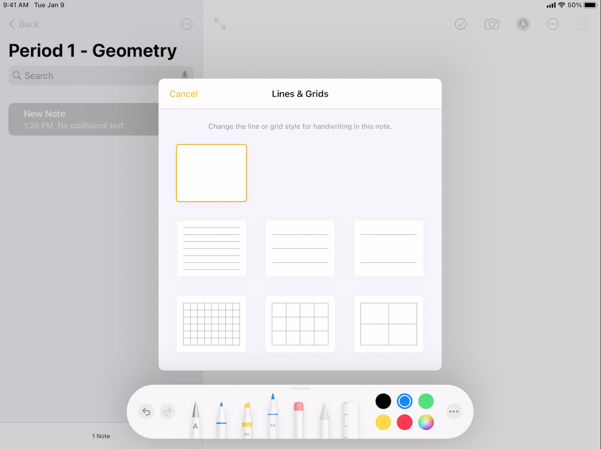

Apple Notes
Opening the App
Use the Notes app to draw a sketch or jot a handwritten note with Apple Pencil (on supported models) or your finger. You can choose from a variety of Markup tools and colors and draw straight lines with the ruler.
Organizing your Notes by Class
Create, rename, move, or delete a folder or subfolder
In the folders list, do any of the following:
-
Create a folder: Tap New Folder, then name your folder.
-
Create a subfolder: Touch and hold a folder, then drag it onto another folder.
-
Rename a folder: Tap the folder, tap the Folder Actions button, tap Rename, then enter a new name.
-
Move a folder: Swipe left on the folder, tap the Move Folder button, then choose a new location. Or touch and hold the folder, then drag it to a new location. The folder becomes a subfolder if you drag it onto another folder.
-
Delete a folder: Swipe left on the folder, then tap the Delete Folder button. Or touch and hold the folder, then tap Delete. If you change your mind, open the Recently Deleted folder to recover the notes.
Here is an example of a Math Class sorted into different periods.
Create and format a new note
-
Tap the New Note button or Ask Siri. Say something like: “Create a new note.”, then enter your text.
-
The first line of the note becomes the note’s title.
-
To change the formatting, tap the Format button. You can apply a heading style, bold or italic font, a bulleted or numbered list, and more.
-
To save the note, tap Done.
Tip: To choose a default style for the first line in all new notes, go to Settings > Notes > New Notes Start With.
You can quickly create a note or resume work on your last note by tapping the Lock Screen with Apple Pencil (on supported models). On other iPad models, you can do this if you add Notes to Control Center. To change the Lock Screen behavior, go to Settings > Notes > Access Note from Lock Screen.
Enabling Lines and Grids
Show lines or grids in notes * In an existing note: Tap the Note Actions button, tap Lines & Grids, then choose a style.
- Choose the default style for all new notes: Go to Settings > Notes > Lines & Grids.

Recommended Settings for Apple Pencils
- When your Apple Pencil is connected to your iPad, only the pencil can be used to draw. Your fingers can be used for scrolling. To change these settings, go to Settings > Notes > Only Draw with Apple Pencil.
App Alternatives to Notes
Currently we also support Microsoft Whiteboard. You can find this app using the HBUHSD AppStore. If you have any other suggestions, please let dcao@hbuhsd.edu know and he will add it to the AppStore.
For assistance using the Whiteboard feature on Zoom, please refer to this.